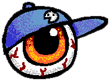

a graphic designer, illustrator, cartoonist and amateur animator from brooklyn. he is currently a teenage student majoring in graphic design.
he also enjoys making websites in his spare time. this is one such site.
you can shoot him an email, if you'd like: sayhi at badbunsen dot com

below are some links to pages on the site. feel free to explore.
portfolio
multimedia (images | videos | goodies)
socials
misc